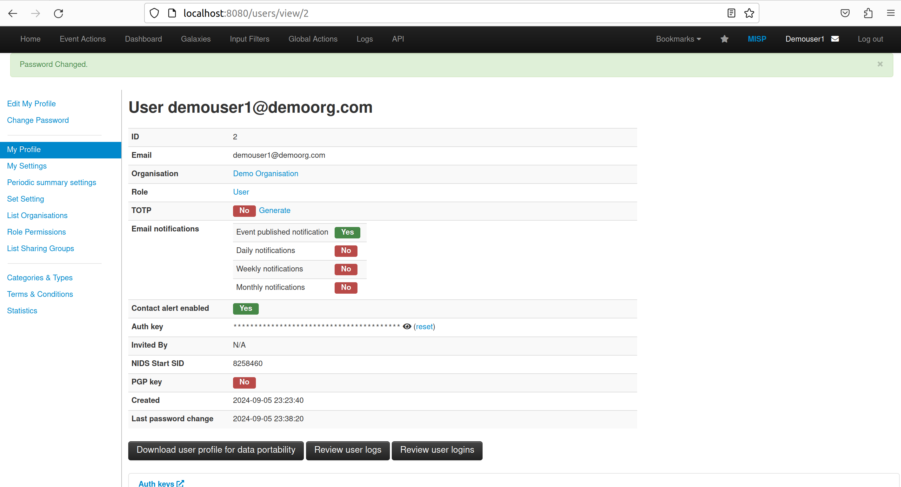

Tool guide
Step by step walkthroughs for the four platforms in every team instance, with screenshots. No login needed to read this. Get your actual credentials from the unlock page.
 port 9000Case & alert management
port 9000Case & alert managementYour team's incident cockpit. Alerts land here, become cases, and get worked through tasks and observables. Two teammates have org admin rights; two have read access.
- Log in to TheHive with your responder account.
- At the top right, click the + Create Case button. You will be prompted to choose how to create the case.


- Choose the Empty case option and fill in the case details.
- Click Confirm. The case is created and appears in the case list.


- While viewing the case, open the Tasks tab and click the add task icon.

- Title: a clear, concise name for the task.
- Description: detailed instructions or a description of the task.
- Assignee: the user responsible for completing it.
- Due date: set one if the task is time sensitive.
- Click Confirm. The task appears in the Tasks tab, where you can track progress and update its status.

- While viewing the case, open the Observables tab and click the add icon.

- Type: the kind of observable (IP address, URL, domain, file hash, email).
- Value: the actual value, such as an IP address, a URL, or a file hash.
- Tags: labels that help categorise it (malware, phishing, command and control).
- TLP & PAP: set the TLP and PAP classification.
- IOC: flag it if it is an Indicator of Compromise.
- Description: a short description of the observable.
- Click Save to add it to the case. It now appears in the case's observables list.

 port 8080Threat-intelligence sharing
port 8080Threat-intelligence sharingWhere indicators live and correlate. Build events full of attributes (IOCs), tag and publish them, and pull in feeds. All four teammates are org admins.
- Log in to MISP with your responder account.
- In the menu, select Events, then click Add Event.



- Enter the Event Info, Distribution, Analysis, and Threat Level.
- Click Submit.

- After saving the event, you land on the event view.
- Click Add Attribute in the left-hand menu, fill in the attribute details, and submit.


 port 9001Observable analysis & response
port 9001Observable analysis & responseThe enrichment engine behind TheHive. It runs analyzers against observables and responders to take action. All four teammates are org admins here.
- On the top left of the menu pane, click + New Analysis.


- TLP: how the analysis results can be shared.
- PAP: what actions can be taken with the results.
- Data Type: select IP from the dropdown so Cortex knows the observable is an IP address.
- Data: type the IP address you want to analyse.
- Analyzer: select the analyzer to run.
- Click Start to begin. Cortex runs the selected analyzer on the IP address.
- Click View to see the analysis details.


- On the top left of the menu pane, click Job History. Each job is listed with a status such as Waiting, In Progress, or Success.

- When the status changes to Success, click the job to open the detailed results page. The analyzer's report shows detailed intelligence on the observable.


 port 8065Team chat & coordination
port 8065Team chat & coordinationYour team's comms during an incident: channels, threads and file sharing. Everyone joins as a normal team member.
- Log in with your responder email (your username is responder<NN>) and password.
- Join your team and its channels; create a channel per incident if you like.
- Use threads and @mentions to keep the investigation chatter organised.
- Drag in screenshots and files; use /commands for quick actions.
- Keep decisions and timelines here so the whole team stays in sync.